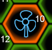
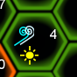
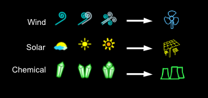

Left-click your tiles to shield it (transfer energy to it), and right-click to bring up the build menu.
Left-click neutral or corrupted tiles to attack. You can only attack a tile if it is adjacent to a tile your own. Energy from your tiles will flow into the attacked tile.
Your Tile 
Corrupted Tile
Neutral Tile 
Your Energy Bank
Click on any tile next to yours, preferably one with a low number (energy). The more energy a tile has, the harder it is to capture.
Energy will flow from your tile to the attacked tile. If your tile runs out of energy, left-click it to start transferring energy into it from your energy bank.
Now you've captured the tile, you can use it to create more energy. There are 3 types of resources, with 3 levels of abundance:
Hopefully the tile you've caught has at least one resource.
Right-click it and choose a plant; you'll probably only be able to afford a wind farm right now.
Resources in higher abundance produce more energy. It'll start adding to your energy banks immediately.
Plants will slowly start to decay. Right-click to repair it. Eventually, if not repaired, the building will turn to rubble,
and the tile will need to be cleared before being built on again (you can still shield the tile however).
Once you've taken a few tiles and have energy coming in, you can start to attack the corruption.
You will need to take all the corrupted tiles to win the game. Equally, the corruption will start to attack your tiles once you're adjacent to it.
If the corruption takes over a tile with a building on it, that building will be turned to rubble.
The corruption can also attack your tiles by sending out spores.
These attacks are weak, but can still take over your tiles if they are not properly shielded.